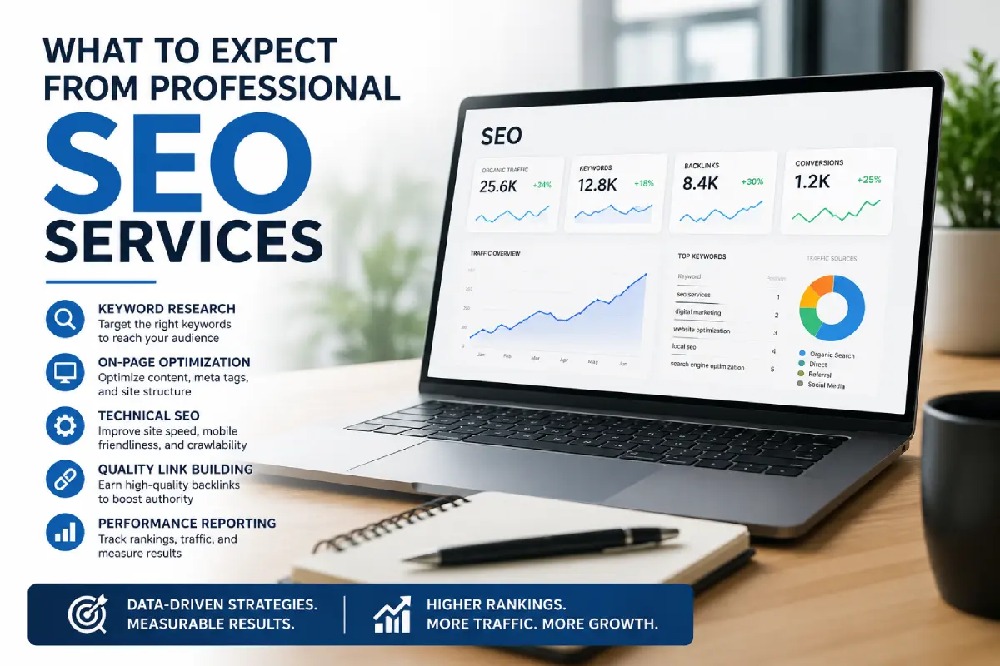

<!DOCTYPE html>
<html lang="zxx">

<head>
    <!-- Meta -->
    <meta charset="utf-8">
    <meta http-equiv="X-UA-Compatible" content="IE=edge">
    <meta name="viewport" content="width=device-width, initial-scale=1.0">
    <meta name="description"
        content="Learn how professional SEO services improve search rankings through technical optimization, quality content, keyword targeting, and ongoing analysis.">
    <link rel="canonical" href="" />
    <meta name="author" content="Awaiken">
    <!-- Page Title -->
    <title>What to Expect from Professional SEO Services</title>
    <!-- Favicon Icon -->
    <link rel="shortcut icon" type="image/x-icon" href="images/favicon.png">
    <!-- Google Fonts Css-->
    <link rel="preconnect" href="https://fonts.googleapis.com/">
    <link rel="preconnect" href="https://fonts.gstatic.com/" crossorigin>
    <link
        href="https://fonts.googleapis.com/css2?family=Rajdhani:wght@300;400;500;600;700&amp;family=Rubik:ital,wght@0,300..900;1,300..900&amp;display=swap"
        rel="stylesheet">
    <!-- Bootstrap Css -->
    <link href="css/bootstrap.min.css" rel="stylesheet" media="screen">
    <!-- SlickNav Css -->
    <link href="css/slicknav.min.css" rel="stylesheet">
    <!-- Swiper Css -->
    <link rel="stylesheet" href="css/swiper-bundle.min.css">
    <!-- Font Awesome Icon Css-->
    <link href="css/all.min.css" rel="stylesheet" media="screen">
    <!-- Animated Css -->
    <link href="css/animate.css" rel="stylesheet">
    <!-- Magnific Popup Core Css File -->
    <link rel="stylesheet" href="css/magnific-popup.css">
    <!-- Mouse Cursor Css File -->
    <link rel="stylesheet" href="css/mousecursor.css">
    <!-- Main Custom Css -->
    <link href="css/custom.css" rel="stylesheet" media="screen">
    <!-- Google Tag Manager -->
<script>(function(w,d,s,l,i){w[l]=w[l]||[];w[l].push({'gtm.start':
new Date().getTime(),event:'gtm.js'});var f=d.getElementsByTagName(s)[0],
j=d.createElement(s),dl=l!='dataLayer'?'&l='+l:'';j.async=true;j.src=
'https://www.googletagmanager.com/gtm.js?id='+i+dl;f.parentNode.insertBefore(j,f);
})(window,document,'script','dataLayer','GTM-PNFZKBKQ');</script>
<!-- End Google Tag Manager -->
    <style>.post-entry h1 { font-size: clamp(32px, 5vw, 68px); }
.post-entry h2 { font-size: clamp(26px, 4vw, 46px); }
.post-entry h3 { font-size: clamp(22px, 3.5vw, 40px); }
</script>
        <script type="application/ld+json">
{
  "@context": "https://schema.org",
  "@type": "BlogPosting",
  "mainEntityOfPage": {
    "@type": "WebPage",
    "@id": "https://searchanyoka.com/what-to-expect-from-professional-seo-services.html"
  },
  "headline": "What to Expect from a Professional SEO Service Provider",
  "description": "Learn how professional SEO services improve search rankings through technical optimization, quality content, keyword targeting, and ongoing analysis.",
  "image": {
    "@type": "ImageObject",
    "url": "https://searchanyoka.com/images/professional-seo-services-guide.webp"
  },
  "author": {
    "@type": "Organization",
    "name": "Search Anyoka",
    "url": "https://searchanyoka.com"
  },
  "publisher": {
    "@type": "Organization",
    "name": "Search Anyoka",
    "logo": {
      "@type": "ImageObject",
      "url": "https://searchanyoka.com/images/logo.png"
    }
  },
  "datePublished": "2026-06-08",
  "dateModified": "2026-06-08",
  "articleSection": "SEO",
  "keywords": [
    "professional seo services",
    "seo service provider",
    "technical seo",
    "keyword research",
    "seo content strategy",
    "search engine optimization",
    "seo audit",
    "seo consulting",
    "seo agency",
    "organic search rankings"
  ],
  "url": "https://searchanyoka.com/what-to-expect-from-professional-seo-services.html",
  "inLanguage": "en-US"
}
</script>
</head>

<body>
<!-- Google Tag Manager (noscript) -->
<noscript><iframe src="https://www.googletagmanager.com/ns.html?id=GTM-PNFZKBKQ"
height="0" width="0" style="display:none;visibility:hidden"></iframe></noscript>
<!-- End Google Tag Manager (noscript) -->
    <!-- Preloader Start -->
    <div class="preloader">
        <div class="loading-container">
            <div class="loading"></div>
            <div id="loading-icon"></div>
        </div>
    </div>
    <!-- Preloader End -->

    <!-- Header Start -->
    <header class="main-header">
        <div class="header-sticky">
            <nav class="navbar navbar-expand-lg">
                <div class="container">
                    <!-- Logo Start -->
                    <a class="navbar-brand" href="index.html">
                        
                    </a>
                    <!-- Logo End -->

                    <!-- Main Menu Start -->
                    <div class="collapse navbar-collapse main-menu">
                        <div class="nav-menu-wrapper">
                            <ul class="navbar-nav mr-auto" id="menu">
                                <li class="nav-item"><a class="nav-link" href="index.html">Home</a></li>
                                <li class="nav-item submenu"><a class="nav-link" href="services.html">Services</a>
                                    <ul>
                                        <li class="nav-item"><a class="nav-link" href="seo-services.html">SEO
                                                Services</a></li>
                                        <li class="nav-item"><a class="nav-link" href="ppc-services.html">PPC
                                                Services</a></li>
                                        <li class="nav-item"><a class="nav-link" href="packages.html">SEO + PPC
                                                Packages</a></li>
                                        <li class="nav-item"><a class="nav-link" href="free-audit.html">Free
                                                Audit</a></li>
                                    </ul>
                                </li>

                                <li class="nav-item"><a class="nav-link" href="blog.html">Blog</a></li>
                                <li class="nav-item"><a class="nav-link" href="about.html">About</a></li>
                                <li class="nav-item"><a class="nav-link" href="contact.html">Contact</a></li>
                            </ul>
                        </div>

                        <!-- Header Btn Start -->
                        <div class="header-btn">
                            <a href="free-audit.html" class="btn-default">Free Audit</a>
                        </div>
                        <!-- Header Btn End -->
                    </div>
                    <!-- Main Menu End -->
                    <div class="navbar-toggle"></div>
                </div>
            </nav>
            <div class="responsive-menu"></div>
        </div>
    </header>
    <!-- Header End -->

    <!-- Page Header Start -->
    <div class="page-header parallaxie">
        <div class="container">
            <div class="row align-items-center">
                <div class="col-lg-12">
                    <!-- Page Header Box Start -->
                    <div class="page-header-box">
                        <h1 class="text-anime-style-2" data-cursor="-opaque">What to Expect from a Professional SEO Service Provider
</h1>
                        <div class="post-single-meta wow fadeInUp">
                            <ol class="breadcrumb">
                                <li><i class="fa-regular fa-user"></i> Admin</li>
                                <li><i class="fa-regular fa-clock"></i> 5 June, 2026</li>
                            </ol>
                        </div>
                    </div>
                    <!-- Page Header Box End -->
                </div>
            </div>
        </div>
    </div>
    <!-- Page Header End -->

    <!-- Scrolling Ticker Section Start -->
    <div class="our-scrolling-ticker subpages-scrolling-ticker">
        <!-- Scrolling Ticker Start -->
        <div class="scrolling-ticker-box">
            <div class="scrolling-content">
                <span>Local SEO Strategy</span>
                <span>Google Business Profile</span>
                <span>Accra Market Dominance</span>
                <span>Citations & Reviews</span>
                <span>Organic Growth</span>
                <span>Lead Generation</span>
                <span>Local SEO Strategy</span>
                <span>Google Business Profile</span>
                <span>Accra Market Dominance</span>
                <span>Citations & Reviews</span>
                <span>Organic Growth</span>
                <span>Lead Generation</span>
            </div>

            <div class="scrolling-content">
                <span>Local SEO Strategy</span>
                <span>Google Business Profile</span>
                <span>Accra Market Dominance</span>
                <span>Citations & Reviews</span>
                <span>Organic Growth</span>
                <span>Lead Generation</span>
                <span>Local SEO Strategy</span>
                <span>Google Business Profile</span>
                <span>Accra Market Dominance</span>
                <span>Citations & Reviews</span>
                <span>Organic Growth</span>
                <span>Lead Generation</span>
            </div>
        </div>
        <!-- Scrolling Ticker End -->
    </div>
    <!-- Scrolling Ticker Section End -->

    <!-- Page Single Post Start -->
    <div class="page-single-post">
        <div class="container">
            <div class="row">
                <div class="col-lg-12">
                    <!-- Post Featured Image Start -->
                    <div class="post-image">
                        <figure class="image-anime reveal">
                            
                        </figure>
                    </div>
                    <!-- Post Featured Image Start -->

<div class="post-content">
<!-- Post Entry Start -->
<div class="post-entry">
<div class="post-content">
<!-- Post Entry Start -->
<div class="post-entry">

<h2 class="wow fadeInUp" data-wow-delay="0.5s">Introduction</h2>
<p class="wow fadeInUp">Hiring an SEO provider should make your business feel clearer, not more confused. A good professional does not hide behind jargon or vague promises. They explain what they are doing, why it matters, and how each step supports your goals.</p>
<p class="wow fadeInUp">That matters because SEO is no longer a one-time task or a quick fix. In 2026, it is an ongoing process that combines research, content, technical work, and performance tracking. If you know what to expect from a professional provider, it becomes much easier to tell the difference between real strategy and empty sales talk.</p>
<p class="wow fadeInUp">A trustworthy SEO partner should help you understand where your website stands today, what is holding it back, and what needs to happen next. The process should feel structured, practical, and tied to business outcomes, not just rankings. If you want to understand the bigger picture first, see <a href="why-your-business-needs-seo-services.html" target="_blank" rel="noopener noreferrer">why your business needs SEO services</a>.</p>

<h2 class="wow fadeInUp" data-wow-delay="0.5s">Initial SEO Audit</h2>
<p class="wow fadeInUp">The first thing a professional SEO provider should do is review your current website performance. This audit is the starting point because it shows what is working, what is broken, and where the biggest opportunities are. Without it, any SEO work would be based on guesswork.</p>
<p class="wow fadeInUp">A proper audit usually covers technical issues, content quality, site structure, keyword visibility, mobile performance, indexing, and user experience. The goal is to understand how search engines currently see your site and whether anything is preventing your pages from ranking properly. In many cases, the audit reveals problems that have been hiding in plain sight.</p>
<p class="wow fadeInUp">This step is important because many websites have issues they do not realize are hurting performance. Pages may be slow, content may be thin, important pages may not be indexed, or internal links may be weak. A good provider will explain these problems clearly instead of burying them in technical language.</p>
<p class="wow fadeInUp">A strong audit should also lead to priorities. Not every issue needs to be fixed at once. The best providers identify what matters most first so the SEO plan is focused and realistic. If you want to start with a simple discovery step, you can request a <a href="free-audit.html" target="_blank" rel="noopener noreferrer">free audit</a>.</p>

<h2 class="wow fadeInUp" data-wow-delay="0.5s">Keyword Research Process</h2>
<p class="wow fadeInUp">After the audit, keyword research should become one of the most important parts of the process. A professional provider should not guess at keywords or rely only on obvious terms. Instead, they should look at how real customers search and identify the phrases that have the best mix of relevance, intent, and opportunity.</p>
<p class="wow fadeInUp">Good keyword research goes beyond search volume. A high-volume keyword is not always the right one if it is too competitive or too broad. What matters more is whether the keyword matches what your audience actually wants and whether your business can realistically compete for it.</p>
<p class="wow fadeInUp">A professional SEO service provider should also group keywords by intent. Some people are looking for information, some are comparing options, and some are ready to buy. Those different stages require different pages and different content approaches. When the keyword strategy is built properly, it becomes easier to attract the right visitors.</p>
<p class="wow fadeInUp">This process should also be tied to business goals. A local service business, for example, may care more about location-based terms than broad informational searches. A provider who understands that distinction will build a keyword plan that supports leads, sales, and visibility instead of traffic alone.</p>

<h2 class="wow fadeInUp" data-wow-delay="0.5s">Competitor Analysis</h2>
<p class="wow fadeInUp">A serious SEO provider should also study your competitors. This is one of the best ways to understand what is working in your market and where your site is falling behind. Competitor analysis helps reveal gaps in content, authority, technical setup, and overall visibility.</p>
<p class="wow fadeInUp">The goal is not to copy competitors. The goal is to learn from them. A strong provider will look at which keywords competitors rank for, what kind of content they publish, how their pages are structured, and what gives them an advantage in search. That information can shape a smarter strategy for your own site.</p>
<p class="wow fadeInUp">This is especially useful in competitive industries where several businesses are targeting the same audience. If competitors are outranking you, there is usually a reason. It may be stronger content, better backlinks, better user experience, or simply a more consistent SEO effort over time. A professional should be able to identify those reasons and explain them clearly.</p>
<p class="wow fadeInUp">Competitor analysis also helps uncover opportunities your competitors may have missed. Sometimes there are underserved keywords, weak content gaps, or local search openings that can be used to your advantage. A good provider will look for those opportunities instead of just trying to catch up.</p>

<h2 class="wow fadeInUp" data-wow-delay="0.5s">On-Page Optimization</h2>
<p class="wow fadeInUp">On-page optimization is where strategy starts turning into visible changes on the website. This includes improving titles, headings, meta descriptions, internal links, image text, and page content. It is one of the most practical parts of SEO because it directly affects how both users and search engines understand a page.</p>
<p class="wow fadeInUp">A professional provider should make sure each important page has a clear purpose. A service page should explain what the business offers, who it helps, and why the visitor should take the next step. A blog post should answer a specific question or support a topic in a useful way. Every page should be built around intent, not filler.</p>
<p class="wow fadeInUp">This work should also improve readability. Search engine optimization is not just about inserting keywords. It is about making the page easier to understand and more useful to the person reading it. If a page feels awkward, repetitive, or overly promotional, it usually will not perform as well as a page that feels natural and clear.</p>
<p class="wow fadeInUp">A good SEO provider will also look at internal linking. Linking related pages together helps users move through the site and helps search engines understand which pages matter most. That creates a stronger structure and gives important pages more support.</p>

<h2 class="wow fadeInUp" data-wow-delay="0.5s">Technical SEO Improvements</h2>
<p class="wow fadeInUp">Technical SEO is the part many business owners do not see, but it can have a major impact on performance. A professional SEO provider should check whether your website is easy for search engines to crawl, index, and understand. If technical issues are present, even excellent content may struggle to rank.</p>
<p class="wow fadeInUp">Common technical improvements include fixing broken links, improving page speed, making the site mobile-friendly, cleaning up redirect issues, resolving indexing errors, and improving site architecture. These changes may not be flashy, but they can make the whole website work better.</p>
<p class="wow fadeInUp">A professional should also pay attention to structured data, duplicate content, crawl depth, and URL organization. These details help search engines process the site more efficiently. They also improve the user experience by making the website easier to navigate and more reliable overall.</p>
<p class="wow fadeInUp">Technical SEO is often where long-term gains start. If your site loads slowly or search engines are having trouble accessing your pages, that can limit every other part of your SEO effort. A solid provider will treat technical health as a foundation, not an afterthought.</p>

<h2 class="wow fadeInUp" data-wow-delay="0.5s">Link Building Strategies</h2>
<p class="wow fadeInUp">Link building is still an important part of SEO, but it should be done carefully. A professional SEO provider should focus on earning links that are relevant, credible, and natural. The goal is not to chase volume. It is to build authority in a way that supports your reputation and search performance.</p>
<p class="wow fadeInUp">Good link building strategies may include content outreach, digital PR, guest contributions, partnerships, or earning mentions through valuable resources. The best links usually come from sites that are connected to your industry or audience. Those links help search engines see your website as more trustworthy and established.</p>
<p class="wow fadeInUp">A strong provider will avoid shady tactics. Buying large numbers of low-quality links or using spammy directories may create short-term movement, but it can also create long-term problems. Real link building takes more effort, but it is much safer and more sustainable.</p>
<p class="wow fadeInUp">This part of the process should also be transparent. A professional should be able to explain where links are coming from and why they matter. If link building sounds secretive or vague, that is usually a warning sign.</p>

<h2 class="wow fadeInUp" data-wow-delay="0.5s">Reporting and Analytics</h2>
<p class="wow fadeInUp">A professional SEO provider should not just do the work and disappear. They should show you what is happening, what is improving, and what still needs attention. Reporting and analytics are essential because they turn SEO into something measurable.</p>
<p class="wow fadeInUp">Good reports should cover rankings, traffic trends, leads, conversions, top-performing pages, and technical progress. But the most important part is interpretation. Numbers alone are not enough. A strong provider should explain what the data means in plain language and how it connects to business results.</p>
<p class="wow fadeInUp">This is where many weak providers fall short. They may send charts or keyword lists without explaining the bigger picture. A real SEO partner should help you understand how your site is performing and whether the strategy is moving in the right direction.</p>
<p class="wow fadeInUp">Analytics should also inform future decisions. If certain pages are performing well, those pages may deserve more support. If some keywords are not converting, the strategy may need to change. Reporting should guide action, not just document activity.</p>

<h2 class="wow fadeInUp" data-wow-delay="0.5s">Red Flags to Avoid</h2>
<p class="wow fadeInUp">Not every SEO provider works in a way that benefits your business. One major red flag is a promise of instant results. SEO takes time, and anyone claiming guaranteed fast rankings is usually overselling what they can actually deliver.</p>
<p class="wow fadeInUp">Another warning sign is poor communication. If a provider uses confusing language, avoids direct questions, or cannot explain their process clearly, that is a problem. Good SEO should be understandable, even if some parts are technical.</p>
<p class="wow fadeInUp">You should also watch out for providers who focus only on rankings and ignore business outcomes. Ranking improvements are useful, but they are not the full goal. If the work is not tied to leads, traffic quality, and conversions, the strategy may not help your business much.</p>
<p class="wow fadeInUp">Other red flags include generic packages, lack of reporting, secret link-building methods, and content that feels mass-produced. A professional provider should tailor the work to your business. If everything feels recycled or one-size-fits-all, it probably is. If you are trying to decide whether it is time to bring in help, review <a href="10-clear-signs-you-need-professional-seo-services.html" target="_blank" rel="noopener noreferrer">10 clear signs you need professional SEO services</a>.</p>

<h2 class="wow fadeInUp" data-wow-delay="0.5s">Conclusion</h2>
<p class="wow fadeInUp">A professional SEO service provider should give you structure, clarity, and a plan you can trust. The process should begin with a strong audit, continue with smart keyword research and competitor analysis, and move into on-page, technical, and authority-building work that supports your goals.</p>
<p class="wow fadeInUp">Just as important, the provider should keep you informed along the way. You should know what is being done, why it matters, and how the work is affecting your website's performance. SEO works best when it feels strategic and transparent.</p>
<p class="wow fadeInUp">When you know what to expect, it becomes much easier to choose the right partner. A strong SEO provider should make your business more visible, more competitive, and better prepared for long-term growth. For small businesses especially, this kind of support can be the difference between steady lead flow and unpredictable growth, as explained in <a href="how-seo-services-help-small-businesses-get-more-leads.html" target="_blank" rel="noopener noreferrer">how SEO services help small businesses get more leads</a>.</p>
<p class="wow fadeInUp">If your business serves customers in Ghana, local visibility is particularly important. You can learn more in <a href="why-local-seo-is-critical-for-ghanaian-businesses.html" target="_blank" rel="noopener noreferrer">why local SEO is critical for Ghanaian businesses</a>.</p>
<p class="wow fadeInUp">To explore how support is typically structured, check our <a href="seo-services.html" target="_blank" rel="noopener noreferrer">SEO services</a> page and review available <a href="packages.html" target="_blank" rel="noopener noreferrer">packages</a>. You can also learn about the team on the <a href="about.htm" target="_blank" rel="noopener noreferrer">about page</a>.</p>

</div>
</div>

<!-- Post Single Content End -->
                        </div>
                        <!-- Post Entry End -->

                        <!-- Post Tag Links Start -->
                        <div class="post-tag-links">
                            <div class="row align-items-center">
                                <div class="col-lg-8">
                                    <!-- Post Tags Start -->
                                    <div class="post-tags wow fadeInUp" data-wow-delay="0.5s">
                                        <span class="tag-links">
                                            Tags:
                                            <a href="#">Local SEO</a>
                                            <a href="#">Marketing Ghana</a>
                                            <a href="#">Google Business</a>
                                        </span>
                                    </div>
                                    <!-- Post Tags End -->
                                </div>

                                <div class="col-lg-4">
                                    <!-- Post Social Links Start -->
                                    <div class="post-social-sharing wow fadeInUp" data-wow-delay="0.5s">
                                        <ul>
                                                                             <li>
  <a href="https://www.facebook.com/profile.php?id=61582041947229" target="_blank" rel="noopener noreferrer">
    <i class="fa-brands fa-facebook-f"></i>
  </a>
</li>                                        <li>
  <a href="https://www.linkedin.com/company/search-anyoka/" target="_blank" rel="noopener noreferrer">
    <i class="fa-brands fa-linkedin-in"></i>
  </a>
                                        </l>
                                            <li><a href="#"><i class="fa-brands fa-instagram"></i></a></li>
                                            <li><a href="#"><i class="fa-brands fa-x-twitter"></i></a></li>
                                        </ul>
                                    </div>
                                    <!-- Post Social Links End -->
                                </div>
                            </div>
                        </div>
                        <!-- Post Tag Links End -->
                    </div>
                    <!-- Post Single Content End -->
                </div>
            </div>
        </div>
    </div>
    <!-- Page Single Post End -->

    <!-- Footer Main Start -->
        <footer class="footer-main light-section">
            <div class="container">
                <div class="row">
                    <div class="col-lg-3">
                        <!-- About Footer start -->
                        <div class="about-footer">
                            <!-- Footer Logo Start -->
                            <div class="footer-logo">
                                
                            </div>
                            <!-- Footer Logo End -->

                            <!-- Footer Contact Box Start -->
                            <div class="about-footer-content">
                                <p>Get Found. Get Clicks. Get Customers. Your growth journey starts today!</p>
                            </div>
                            <!-- Footer Contact Box End -->

                            <!-- Footer Newsletters Form Start -->
                            <div class="footer-newsletters-form">
                                <form id="newslettersForm" action="#" method="POST">
                                    <div class="form-group">
                                        <input type="email" name="mail" class="form-control" id="mail"
                                            placeholder="Enter your email" required>
                                        <button type="submit"></button>
                                    </div>
                                </form>
                            </div>
                            <!-- Footer Newsletters Form End -->
                        </div>
                        <!-- About Footer End -->
                    </div>

                    <div class="col-lg-3 col-md-6">
                        <!-- Footer Links Start -->
                        <div class="footer-links">
                            <h3>contact us</h3>

                            <!-- Footer Contact Item Start -->
                            <div class="footer-contact-item">
                                <div class="icon-box">
                                    
                                </div>
                                <div class="footer-contact-content">
                                    <p><a href="tel:+233242359492">+233 24 235 9492</a></p>
                                </div>
                            </div>
                            <!-- Footer Contact Item End -->

                            <!-- Footer Contact Item Start -->
                            <div class="footer-contact-item">
                                <div class="icon-box">
                                    
                                </div>
                                <div class="footer-contact-content">
                                    <p><a href="mailto:info@searchanyoka.com">info@searchanyoka.com</a></p>
                                </div>
                            </div>
                            <!-- Footer Contact Item End -->
                        </div>
                        <!-- Footer Links End -->
                    </div>

                    <div class="col-lg-3 col-md-6">
                        <!-- Footer Links start -->
                        <div class="footer-links">
                            <h3>Quick Links</h3>
                            <ul>
                                <li><a href="about.html">About Us</a></li>
                                <li><a href="blog.html">Blog</a></li>
                                <li><a href="contact.html">Contact Us</a></li>
                             
                            </ul>
                        </div>
                        <!-- Footer Links end -->
                    </div>

                    <div class="col-lg-3 col-md-12">
                        <!-- Footer Links start -->
                        <div class="footer-links">
                            <h3>our location</h3>
                            <ul>
                                <li>Accra, Ghana</li>
                            </ul>
                        </div>
                        <!-- Footer Links end -->
                    </div>

                    <div class="col-lg-12">
                        <!-- Footer Copyright Section Start -->
                        <div class="footer-copyright">
                            <!-- Footer Copyright Start -->
                            <div class="footer-copyright-text">
                                <p>Copyright © 2026 Search Anyoka. All Rights Reserved.</p><a
                                    style="color:aquamarine; text-shadow: 2px 2px 4px rgba(0,0,0,0.8), -1px -1px 0 #000, 1px -1px 0 #000, -1px 1px 0 #000, 1px 1px 0 #000;"></a>
                                
                            </div>
                            <!-- Footer Copyright End -->

                            <!-- Footer Social Link Start -->
                            <div class="footer-social-links">
                                <ul>
                                    <li><a href="#"><i class="fa-brands fa-instagram"></i></a></li>
                                  <li>
  <a href="https://www.facebook.com/profile.php?id=61582041947229" target="_blank" rel="noopener noreferrer">
    <i class="fa-brands fa-facebook-f"></i>
  </a>
</li>
                                    <li><a href="#"><i class="fa-brands fa-dribbble"></i></a></li>
                                </ul>
                            </div>
                            <!-- Footer Social Link End -->
                        </div>
                        <!-- Footer Copyright Section End -->
                    </div>
                </div>
            </div>
        </footer>
        <!-- Footer Main End -->

    <!-- Jquery Library File -->
    <script src="js/jquery-3.7.1.min.js"></script>
    <!-- Bootstrap js file -->
    <script src="js/bootstrap.min.js"></script>
    <!-- Validator js file -->
    <script src="js/validator.min.js"></script>
    <!-- SlickNav js file -->
    <script src="js/jquery.slicknav.js"></script>
    <!-- Swiper js file -->
    <script src="js/swiper-bundle.min.js"></script>
    <!-- Counter js file -->
    <script src="js/jquery.waypoints.min.js"></script>
    <script src="js/jquery.counterup.min.js"></script>
    <!-- Magnific js file -->
    <script src="js/jquery.magnific-popup.min.js"></script>
    <!-- SmoothScroll -->
    <script src="js/SmoothScroll.js"></script>
    <!-- Parallax js -->
    <script src="js/parallaxie.js"></script>
    <!-- MagicCursor js file -->
    <script src="js/gsap.min.js"></script>
    <script src="js/magiccursor.js"></script>
    <!-- Text Effect js file -->
    <script src="js/SplitText.js"></script>
    <script src="js/ScrollTrigger.min.js"></script>
    <!-- YTPlayer js File -->
    <script src="js/jquery.mb.YTPlayer.min.js"></script>
    <!-- Wow js file -->
    <script src="js/wow.min.js"></script>
    <!-- Main Custom js file -->
    <script src="js/function.js"></script>

 <script>
document.querySelectorAll('.faq-question').forEach((item) => {
  item.addEventListener('click', () => {
    const parent = item.parentElement;

    // Close all other FAQs (optional)
    document.querySelectorAll('.faq-item').forEach((faq) => {
      if (faq !== parent) {
        faq.classList.remove('active');
      }
    });

    // Toggle current
    parent.classList.toggle('active');
  });
});
</script>
</body>

</html>
